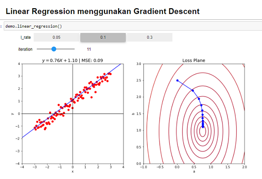

regresi linear sebenarnya algoritma yg sangat simple karena cuma tarik garis lurus aja, tapi idea yg simple ini akan amat sangat kepake dideep learning dan kita akan membahasnya dengan detail, sebelum ke regresi linear kita harus tau dulu persamaan garis lurus dimana rumusnya adalah "y = ax +b" atau "y = mx +c" sama aja pada intinya, dimana :
a = slope(kemiringan)
b = bias(meleset)/titik potong
Artinya apa : kalo b.nya kita tambah akan geser atas bawah Kalo a.nya kita tambah akan makin tegak dan makin datar, kita sebagai manusia kan dengan gampangnya yah ngeprediksi data cuma geser a sm bnya doang untuk ngeprediksi itu, tapi pertanyaanya can automate this procces for machine, jawabanya bisa
karena kita butuh suatu angka yg merepresentasikan kesalahan, dan pada gradient decsent menggunakan MSE, sebenarnya ini gaditerangin sm pa wira karena tidak terekam tapi pada intinya itu cuma mengandalkan kemiringan doang / a nya saja untuk ngeprediksi data tsb
Problem 2 Bagaimana kalo kita punya problem yg mengharuskan kita menggeser a dan b nya untuk mendapat error terkcil kan ya tapi sekarang 2dimensi dan dibalik layar kurva los td ganti menjadi loss plane
Oke kita akan menyuruh mesin untuk mencari loss paling kecil yaa.dr sisi a bentuknya parabola dan dr sisi b bentuknya parabola jg hasilnya jd mangkuk.nah kita mau mencari dasar dr mangkuk itu yah.pada plot 2dimensi kn ada keterangan angkanya.yudh kita coba pakai titik korrdinat dr dasar mangkuk tsb, Ksalahanya itu kliatan dr bentuk pola lossnya.mesin itu udh ada acuanya yaa yaitu loss, nah itulah teknik yg disebut "optimizer".Optimizer akan secara otomatis mencari dasar dr mangkuk dan kalo udh Nemu mangkuknya a sm b.nya dapet yah
secara umum optimizer ada 2:
- Gradient based optimizer(memanfaatkan kemiringan)
1. Gradient Descent, Ideanya dr gradient decsent(menuruni bukit) jadi kan bentuknya kaya magkok gt kan yudh kita cari yg curam lalu tgal turunin lembahnya lama lama sampai dibawah
- Non Gradient Based optimizer(tidak memanfaatkan kemiringan)
Contohnya adalah Bayesian serch yahh itu kan tidak memanfaatkan kemiringan.dia gacoba kmiringan ya Dia hanya cba Dsni bagus ngga ganti lg dan lama lama probabilitynya akan Nemu sndri yah dasar dr mangkuknya dimana
learning rate itu untuk nge tuning si optimizer Gradient discent kita.mksdnya apa yaa mksdnya kita mau ngecek dilangkah keberapa dia akan ngecek kemiringanya sampe Nemu yg paling bawah, gunain learning rate jangan terlalu kecil dan jangan terlalu besar juga, karena kalo terlalu kecil learningnya lama gaakan sampe sampe, kalo terlalu besar akan meledak kesana kemari
